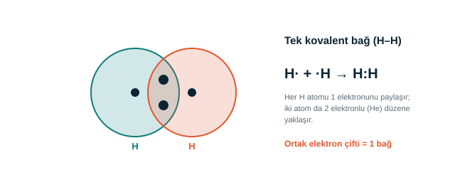

Bölüm 2 · Bağlar
Kovalent bağ: elektronları paylaşmak
Ametal atomları birbirine yaklaştığında değerlik elektronlarını ortaklaşa kullanabilir. Bu ortak elektron çiftinin oluşturduğu bağa kovalent bağ denir.

Lewis yapıları, değerlik elektronlarını noktalarla gösterir. Her ortak elektron çifti bir bağa karşılık gelir ve çizgiyle de gösterilebilir (H–H).
Bir atom kaç bağ yapabilir?
| Element | Değerlik elektronu | Yapabileceği bağ sayısı |
|---|---|---|
| H (hidrojen) | 1 | 1 |
| C (karbon) | 4 | 4 |
| N (azot) | 5 | 3 |
| O (oksijen) | 6 | 2 |
| Cl (klor) | 7 | 1 |
Kural: Bağ sayısı = 8 − değerlik elektron sayısı. Hidrojen 2 elektronla kararlı olduğu için hidrojende bu sayı 2 − değerlik elektron sayısıdır.
Bağ türleri
Tek bağ
1 ortak elektron çifti. Örnek: H–H, C–H.
Çift bağ
2 ortak elektron çifti. Örnek: O=O, O=C.
Üçlü bağ
3 ortak elektron çifti. Örnek: N≡N (azot gazı).